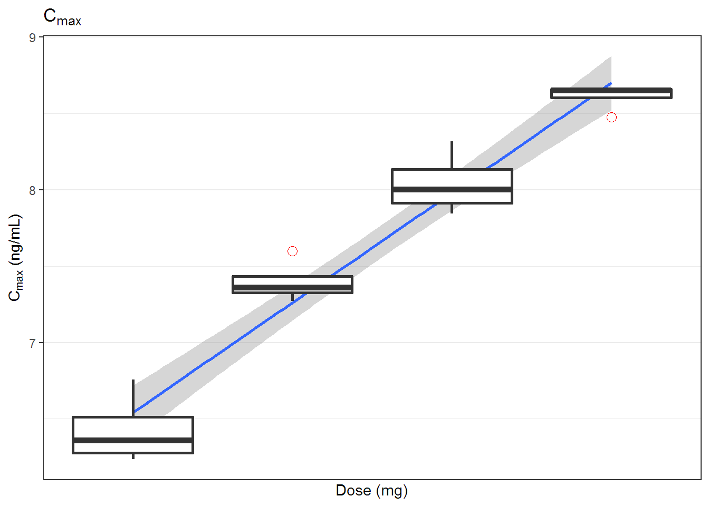

Chapter 8 통계처리
8.1 이 장에서는
생물학적 동등성, 용량 비례성을 확인하는 통계 처리 방법을 알아보겠습니다.
library(tidyverse)
library(ncarbe)
library(broom)8.2 기술통계량 구하기
앞서 4장에서 구한 TheophNca를 갖고 기술 통계량 (평균, 표준편차, 최소값, 최대값, skewness, kurtosis)을 구해보겠습니다. broom::tidy() 함수를 사용하면 간단히 구할 수 있습니다. 다만 NonCompart::tblNCA() 후 data.frame 형태로 저장되어 입력으로 주어져야 합니다.
descStatTheophNca <- tidy(as.data.frame(TheophNca, stringsAsFactors = FALSE)) %>%
select(column, n, mean, sd, min, max, skew, kurtosis)
knitr::kable(descStatTheophNca, digits = 2)| column | n | mean | sd | min | max | skew | kurtosis |
|---|---|---|---|---|---|---|---|
| Subject* | 12 | 6.50 | 3.61 | 1.00 | 12.00 | 0.00 | -1.50 |
| b0* | 12 | 2.39 | 0.25 | 2.03 | 2.82 | 0.13 | -1.38 |
| CMAX* | 12 | 8.76 | 1.47 | 6.44 | 11.40 | 0.21 | -1.19 |
| CMAXD* | 12 | 0.03 | 0.00 | 0.02 | 0.04 | 0.21 | -1.19 |
| TMAX* | 12 | 1.79 | 1.11 | 0.63 | 3.55 | 0.70 | -1.35 |
| TLAG* | 12 | 0.00 | 0.00 | 0.00 | 0.00 | NaN | NaN |
| CLST* | 12 | 1.40 | 0.72 | 0.86 | 3.28 | 1.57 | 1.14 |
| CLSTP* | 12 | 1.40 | 0.72 | 0.86 | 3.28 | 1.58 | 1.19 |
| TLST* | 12 | 24.20 | 0.25 | 23.70 | 24.65 | -0.28 | -0.57 |
| LAMZHL* | 12 | 8.18 | 2.12 | 6.29 | 14.30 | 1.90 | 2.97 |
| LAMZ* | 12 | 0.09 | 0.02 | 0.05 | 0.11 | -0.92 | 0.40 |
| LAMZLL* | 12 | 7.49 | 2.40 | 2.03 | 9.38 | -1.20 | -0.03 |
| LAMZUL* | 12 | 24.20 | 0.25 | 23.70 | 24.65 | -0.28 | -0.57 |
| LAMZNPT* | 12 | 3.83 | 1.34 | 3.00 | 7.00 | 1.32 | 0.28 |
| CORRXY* | 12 | -1.00 | 0.00 | -1.00 | -1.00 | 2.20 | 3.87 |
| R2* | 12 | 1.00 | 0.00 | 0.99 | 1.00 | -2.20 | 3.87 |
| R2ADJ* | 12 | 1.00 | 0.00 | 0.99 | 1.00 | -2.05 | 3.39 |
| AUCLST* | 12 | 103.81 | 23.65 | 73.78 | 148.92 | 0.56 | -1.12 |
| AUCALL* | 12 | 103.81 | 23.65 | 73.78 | 148.92 | 0.56 | -1.12 |
| AUCIFO* | 12 | 122.19 | 38.13 | 84.25 | 216.61 | 1.25 | 0.51 |
| AUCIFOD* | 12 | 0.38 | 0.12 | 0.26 | 0.68 | 1.25 | 0.51 |
| AUCIFP* | 12 | 122.18 | 38.11 | 84.50 | 216.61 | 1.26 | 0.52 |
| AUCIFPD* | 12 | 0.38 | 0.12 | 0.26 | 0.68 | 1.26 | 0.52 |
| AUCPEO* | 12 | 13.54 | 6.35 | 8.13 | 31.25 | 1.71 | 2.19 |
| AUCPEP* | 12 | 13.54 | 6.34 | 8.16 | 31.25 | 1.72 | 2.23 |
| AUMCLST* | 12 | 883.06 | 262.98 | 609.15 | 1459.07 | 0.92 | -0.42 |
| AUMCIFO* | 12 | 1590.30 | 1006.57 | 928.56 | 4505.53 | 2.00 | 2.96 |
| AUMCIFP* | 12 | 1589.85 | 1006.06 | 928.49 | 4505.67 | 2.01 | 2.97 |
| AUMCPEO* | 12 | 38.72 | 11.10 | 26.50 | 67.62 | 1.29 | 1.10 |
| AUMCPEP* | 12 | 38.72 | 11.07 | 26.59 | 67.62 | 1.30 | 1.14 |
| VZFO* | 12 | 31.93 | 6.47 | 22.22 | 43.26 | 0.20 | -1.40 |
| VZFP* | 12 | 31.92 | 6.46 | 22.22 | 43.14 | 0.19 | -1.41 |
| CLFO* | 12 | 2.81 | 0.68 | 1.48 | 3.80 | -0.45 | -0.93 |
| CLFP* | 12 | 2.81 | 0.68 | 1.48 | 3.79 | -0.46 | -0.93 |
| MRTEVLST* | 12 | 8.41 | 0.59 | 7.71 | 9.80 | 0.99 | 0.12 |
| MRTEVIFO* | 12 | 12.29 | 2.96 | 9.98 | 20.80 | 1.90 | 2.83 |
| MRTEVIFP* | 12 | 12.29 | 2.95 | 9.95 | 20.80 | 1.91 | 2.84 |
8.3 생물학적 동등성
생물학적 동등성을 위한 가장 간단한 방법은 ncarbe 패키지(???)를 쓰는 것입니다.
Chow와 Liu의 책의 내용을 충실히 반영하였습니다. (Chow 2009) 현재로서는 2x2 디자인의 간단한 임상시험 디자인만을 지원하고 있습니다. (그림 8.1) 핵심이 되는 함수는 beNCA() 입니다.
knitr::include_graphics('assets/twobytwo.jpg')
Figure 8.1: 전형적인 2x2 설계
## function (concData, SUBJ = "SUBJ", GRP = "GRP", PRD = "PRD",
## TRT = "TRT", method = "kbe", ...)
## NULL다음과 같은 함수 인자를 설정해 주면 됩니다.
- SUBJ: Subject ID, any data type
- GRP: column name in which information of “RT” or “TR” exists.
- PRD: column name in which information of 1 or 2 exists.
- TRT: column name in which information of “R” or “T” exists.
- method:
kbeby authors ornlmepackage uploaded on CRAN
file <- system.file('example', 'beConc.csv', package = 'ncarbe')
concData <- read.csv(file, as.is = TRUE)
beNCA(concData)##
##
## [AUClast]
##
## $`Analysis of Variance`
## SS DF MS F p
## SUBJECT 2.8102897 35 0.08029399 2.049048 0.01947896
## GROUP 0.2811516 1 0.28115157 3.779609 0.06019307
## SUBJECT(GROUP) 2.5291381 34 0.07438642 1.898290 0.03291404
## PERIOD 0.2887407 1 0.28874073 7.368465 0.01035002
## DRUG 0.1186721 1 0.11867210 3.028430 0.09086256
## ERROR 1.3323243 34 0.03918601 NA NA
## TOTAL 4.5500268 71 NA NA NA
##
## $`Between and Within Subject Variability`
## Between Subject Within Subject
## Variance Estimate 0.0176002 0.03918601
## Coefficient of Variation, CV(%) 13.3251642 19.99097469
##
## $`Least Square Means`
## Reference Drug Test Drug
## Geometric Means 5047.026 4648.063
##
## $`90% Confidence Interval`
## Lower Limit Point Estimate Upper Limit
## 90% CI for Ratio 0.8501323 0.920951 0.9976692
##
## $`Sample Size`
## True Ratio=1 True Ratio=Point Estimate
## 80% Power Sample Size 8 13
##
##
##
## [Cmax]
##
## $`Analysis of Variance`
## SS DF MS F p
## SUBJECT 2.85581816 35 0.08159480 0.9764709 0.5283290
## GROUP 0.08840271 1 0.08840271 1.0861008 0.3046908
## SUBJECT(GROUP) 2.76741545 34 0.08139457 0.9740747 0.5302983
## PERIOD 0.04931289 1 0.04931289 0.5901430 0.4476669
## DRUG 0.10908566 1 0.10908566 1.3054627 0.2612001
## ERROR 2.84107119 34 0.08356092 NA NA
## TOTAL 5.85528790 71 NA NA NA
##
## $`Between and Within Subject Variability`
## Between Subject Within Subject
## Variance Estimate -0.001083173 0.08356092
## Coefficient of Variation, CV(%) NaN 29.52142270
##
## $`Least Square Means`
## Reference Drug Test Drug
## Geometric Means 791.1619 731.1
##
## $`90% Confidence Interval`
## Lower Limit Point Estimate Upper Limit
## 90% CI for Ratio 0.8221796 0.924084 1.038619
##
## $`Sample Size`
## True Ratio=1 True Ratio=Point Estimate
## 80% Power Sample Size 16 26
##
##
##
## [Tmax]
##
## $`Wilcoxon Signed-Rank Test`
## p-value
## 0.3059991
##
## $`Hodges-Lehmann Estimate`
## Lower Limit Point Estimate Upper Limit
## 90% Confidence Interval -0.10000 0.0300 0.405
## 90% Confidence Interval(%) 92.18517 102.3444 131.650배균섭 교수님의 강의 자료에서 가져왔습니다.
knitr::include_graphics('assets/fixed-random.jpg')
Figure 8.2: 모수 인자와 변량 인자의 비교
8.4 Dose Proportionality
DP 처리.
16명의 Cmax와 AUClast가 나온 표입니다. Table 8.1
# setup ----
library(readxl)
library(tidyverse)
library(broom)
dp_data <- # Virtual data from 4 dose groups (N=16)
'Dose,Subject,Cmax,AUClast
50,101,860,2000
50,102,510,2300
50,103,620,2900
50,104,540,2400
100,201,1550,6600
100,202,1440,7400
100,203,2000,7300
100,204,1600,7000
200,301,4100,20400
200,302,2800,9500
200,303,3200,8000
200,304,2550,7070
400,401,4800,22000
400,402,5700,23000
400,403,5800,26700
400,404,5760,28884'
sad_indi_pk <- read_csv(dp_data)
knitr::kable(sad_indi_pk, caption = '16명의 C~max~, AUC~last~')| Dose | Subject | Cmax | AUClast |
|---|---|---|---|
| 50 | 101 | 860 | 2000 |
| 50 | 102 | 510 | 2300 |
| 50 | 103 | 620 | 2900 |
| 50 | 104 | 540 | 2400 |
| 100 | 201 | 1550 | 6600 |
| 100 | 202 | 1440 | 7400 |
| 100 | 203 | 2000 | 7300 |
| 100 | 204 | 1600 | 7000 |
| 200 | 301 | 4100 | 20400 |
| 200 | 302 | 2800 | 9500 |
| 200 | 303 | 3200 | 8000 |
| 200 | 304 | 2550 | 7070 |
| 400 | 401 | 4800 | 22000 |
| 400 | 402 | 5700 | 23000 |
| 400 | 403 | 5800 | 26700 |
| 400 | 404 | 5760 | 28884 |
그림을 살펴보겠습니다.
sad_indi_pk_log <- sad_indi_pk %>% mutate_all(log)
figA <- ggplot(sad_indi_pk_log, aes(x=Dose, y=Cmax)) +
geom_smooth(method = 'lm')+
geom_boxplot(aes(group = Dose),
size = 1,
outlier.colour = "red",
outlier.shape = 1,
outlier.size = 3) +
theme_bw() +
scale_x_continuous(breaks = c(50, 100, 200, 400)) +
labs(x = 'Dose (mg)', y = expression('C'[max]*' (ng/mL)'),
title = expression('C'[max]))
figA
figB <- ggplot(sad_indi_pk_log, aes(x=Dose, y=AUClast)) +
geom_smooth(method = 'lm')+
geom_boxplot(aes(group = Dose),
size = 1,
outlier.colour = "red",
outlier.shape = 1,
outlier.size = 3) +
theme_bw() +
scale_x_continuous(breaks = c(50, 100, 200, 400)) +
labs(x = 'Dose (mg)', y = expression('AUC'[(0-last)]*' (ng·hr/mL)'),
title = expression('AUC'[(0-last)]))
figB
lm() 함수를 써서 구할 수 있습니다.
calc_dp <- function(param, fit) {
bind_cols(fit %>% summary %>% tidy %>% filter(term == 'Dose'),
fit %>% confint(level = 0.95) %>% tidy %>% filter(.rownames == 'Dose'),
fit %>% summary %>% glance) %>%
filter(term == 'Dose') %>%
select(-.rownames, -term) %>%
mutate(parameters = param) %>%
mutate(est = sprintf('%0.2f (%0.2f)', estimate, std.error)) %>%
mutate(ci = sprintf('%0.2f-%0.2f', X2.5.., X97.5..)) %>%
select(parameters, est, ci, r.squared, p.value)
}
fit_cmax <- lm(formula = Cmax ~ Dose, data = sad_indi_pk_log)
fit_auclast <- lm(formula = AUClast ~ Dose, data = sad_indi_pk_log)
bind_rows(calc_dp(param = 'Cmax', fit = fit_cmax),
calc_dp(param = 'AUClast', fit = fit_auclast))## parameters est ci r.squared p.value
## 1 Cmax 1.04 (0.06) 0.90-1.18 0.9494890 1.797428e-10
## 2 AUClast 1.07 (0.09) 0.87-1.27 0.9053706 1.486278e-08Cmax는 생동 기준을 만족하는데 반해 AUClast는 만족하지 않는 것을 알 수 있습니다.
References
Chow. 2009. Design and Analysis of Bioavailability and Bioequivalence Studies. Boca Raton: CRC Press.